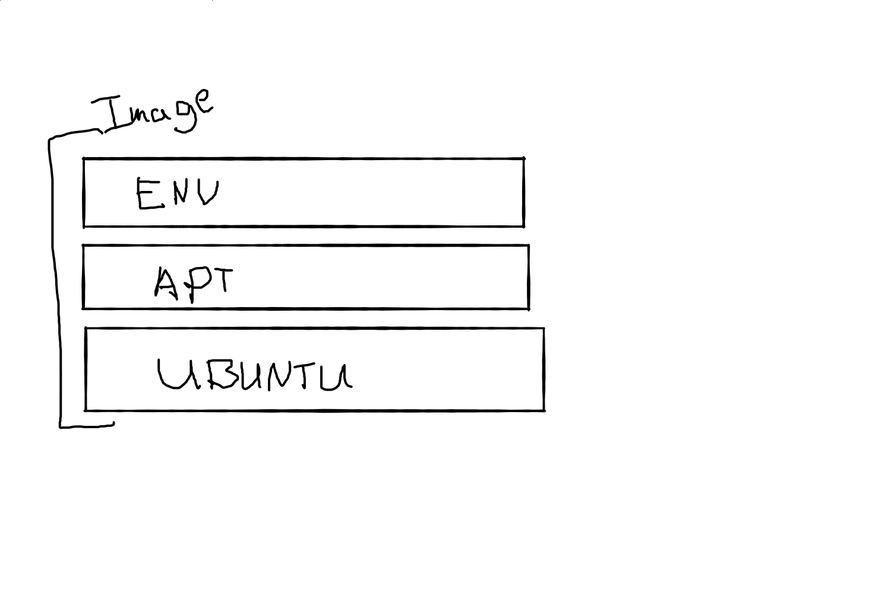
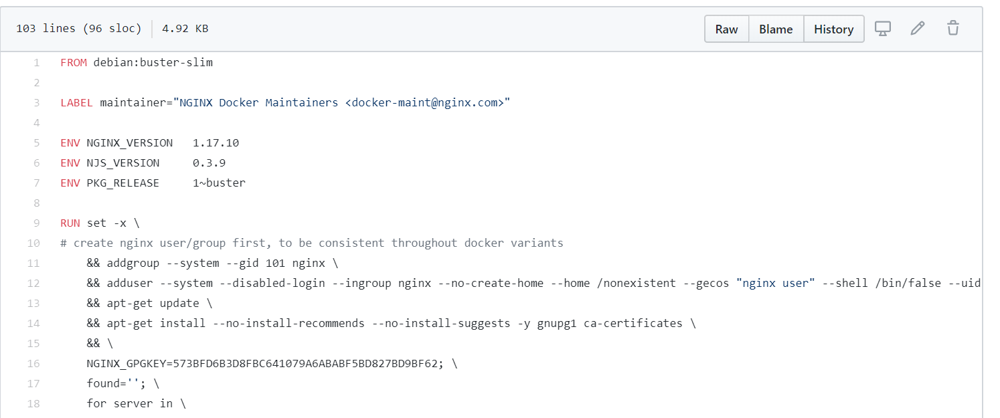

Docker is a platform for developers and sysadmins to build, ship, and run distributed applications.
Consists of Docker Engine, a portable, lightweight runtime and packaging tool, and Docker Hub.
Allows apps to be run unchanged on laptops, data center VMs, and any cloud.
Standardization across all development, testing, and production environments
Eliminates the "works on my machine" problem
Rapid Deployment
Independent of Cloud Provider
Isolation
Security
A service provided by Docker for finding and sharing images
Where official images are hosted
Can be found at hub.docker.com
The basis of everything in Docker
Contains binaries, source code, and other dependencies
Also includes metadata about the image data and how to run the image
Not a complete OS. (No kernels, drivers, etc.)
Image is made up of layers
Won't download layers we already have
Image data won't be stored more than once on a filesystem
A container is an instance of an image running as a process
Can have many containers running off the same image
Meant to be unchanging and disposable
This means that any time there is an update to the image; application data, environment variables, etc. We need to re-deploy
File that contains a list of commands that the Docker client calls when creating an image
